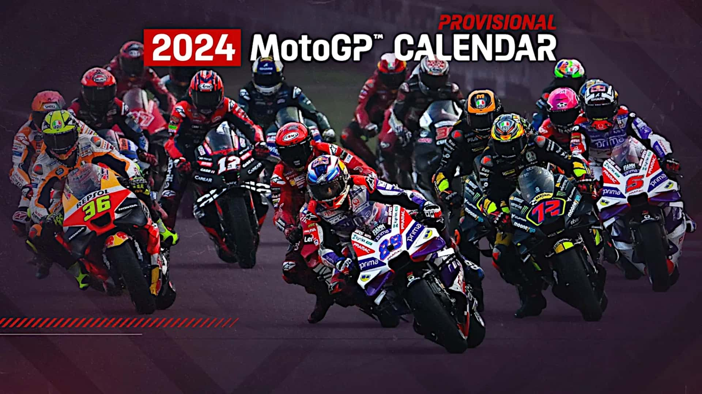
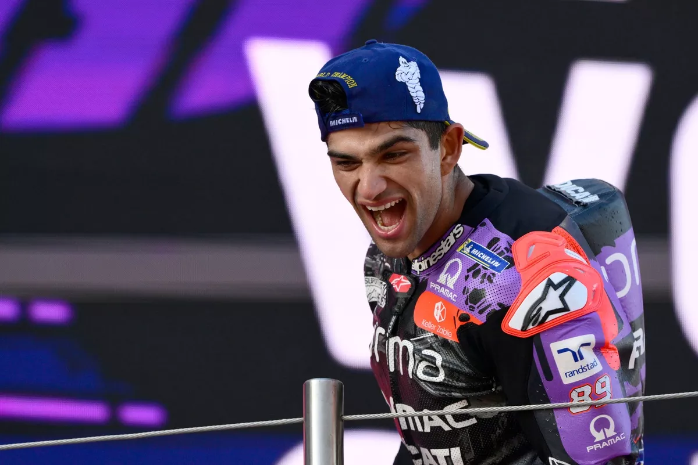

Bienvenue dans le monde du MotoGP!
Plongez dans l'univers passionnant de la MotoGP et découvrez les dernières actualités, les pilotes et bien plus encore.

Plongez dans l'univers passionnant de la MotoGP et découvrez les dernières actualités, les pilotes et bien plus encore.
Jorge Martín a remporté son premier titre de champion du monde de MotoGP lors du dernier Grand Prix à Barcelone. Après une saison de lutte intense avec Francesco Bagnaia, Martín, pilote Ducati, a su maintenir sa position et a scellé le titre avec une belle constance tout au long de l'année. :
La saison MotoGP 2025 se prépare à des changements passionnants, avec plusieurs ajustements dans le calendrier et de nouveaux visages sur la grille. Parmi les évolutions majeures, la saison commencera à Buriram, en Thaïlande...